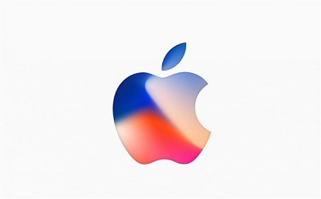
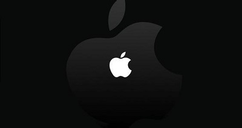
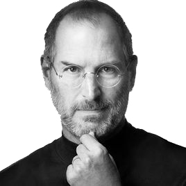
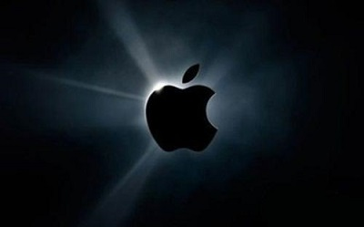

苹果公司介绍
苹果公司（Apple Inc. ）是美国的一家高科技公司。由史蒂夫·乔布斯、斯蒂夫·沃兹尼亚克和罗·韦恩(Ron Wayne)等人于1976年4月1日创立，并命名为美国苹果电脑公司（Apple Computer Inc. ），2007年1月9日更名为苹果公司，总部位于加利福尼亚州的库比蒂诺。
苹果公司1980年12月12日公开招股上市，2012年创下6235亿美元的市值记录，截至2014年6月，苹果公司已经连续三年成为全球市值最大公司。苹果公司在2016年世界500强排行榜中排名第9名。
2013年9月30日，在宏盟集团的“全球最佳品牌”报告中，苹果公司超过可口可乐成为世界最有价值品牌。2014年，苹果品牌超越谷歌（Google），成为世界最具价值品牌。
2016年7月20日，《财富》世界500强排行榜，苹果公司名列第九名[2]
2016年9月8日凌晨1点，2016苹果秋季新品发布会在美国旧金山的比尔·格雷厄姆市政礼堂举行[3] 。10月，苹果公司成为2016年全球100大最有价值品牌第一名。2017年1月6日早晨8点整，“红色星期五”促销活动在苹果官网正式上线，瞬间大量用户涌入官网进行抢购，仅两分钟所有参与活动的耳机便被抢光。2017年2月，Brand Finance发布2017年度全球500强品牌榜单，苹果公司排名第二。[4]
2017年6月7日，2017年《财富》美国500强排行榜发布，苹果公司排名第3位。[5] 2017年7月20日，2017年世界500强排名第9位。[6] 2017天猫双十一“亿元俱乐部”榜单显示，苹果位列第一名。[7]


苹果公司的灵魂——Steve Jobs
史蒂夫·乔布斯[1] （Steve Jobs，1955年2月24日—2011年10月5日[2] ），出生于美国加利福尼亚州旧金山，美国发明家、企业家、美国苹果公司联合创办人。[3]
1976年4月1日，乔布斯签署了一份合同，决定成立一家电脑公司。[1] 1977年4月，乔布斯在美国第一次计算机展览会展示了苹果Ⅱ号样机。1997年苹果推出iMac，创新的外壳颜色透明设计使得产品大卖，并让苹果度过财政危机。[4] 2011年8月24日，史蒂夫·乔布斯向苹果董事会提交辞职申请。[5]
乔布斯被认为是计算机业界与娱乐业界的标志性人物，他经历了苹果公司几十年的起落与兴衰，先后领导和推出了麦金塔计算机（Macintosh）、iMac、iPod、iPhone、iPad等风靡全球的电子产品，深刻地改变了现代通讯、娱乐、生活方式。乔布斯同时也是前Pixar动画公司的董事长及行政总裁。[6]
2011年10月5日，史蒂夫·乔布斯因患胰腺癌病逝，享年56岁。[2]

